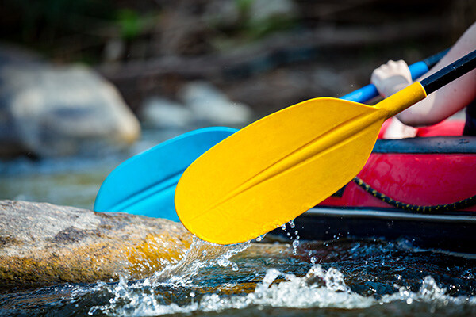
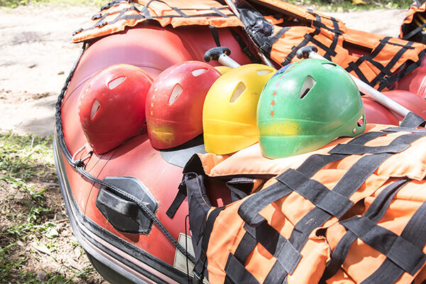

Whitewater Rapids Adventure
Experience the thrill of navigating class III-IV rapids with our expert guides. Duration: 4 hours.
Choose from a variety of thrilling rafting adventures suitable for beginners and experts alike. Enjoy nature, teamwork, and adrenaline on every ride!

Experience the thrill of navigating class III-IV rapids with our expert guides. Duration: 4 hours.

A gentle rafting trip perfect for families and beginners. Duration: 2 hours. Fun and safe for all ages.

Enjoy a scenic rafting experience during sunset with beautiful views of the river valley. Duration: 3 hours.
| Trip Name | Duration | Difficulty | Price (USD) |
|---|---|---|---|
| Whitewater Rapids Adventure | 4 hours | Intermediate | $120 |
| Family-Friendly Rafting | 2 hours | Easy | $80 |
| Sunset River Expedition | 3 hours | Easy-Intermediate | $100 |
Contact us today and secure your spot on one of our exciting rafting trips!
Get in Touch